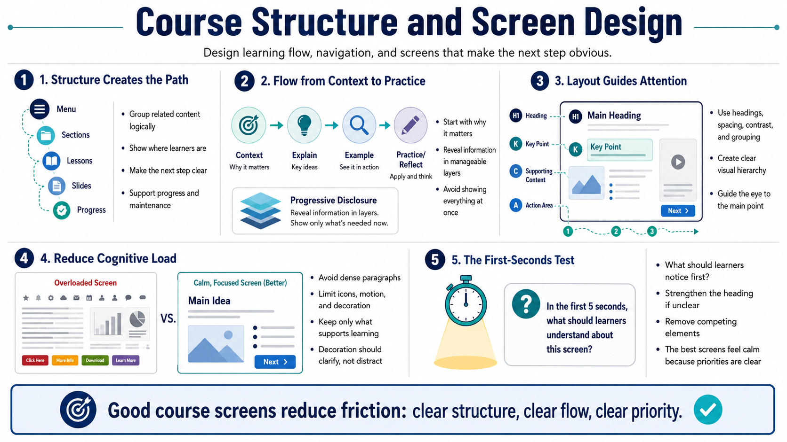

Building Course Structure and Screens
Connecting to LMS... Progress: in progress

Narration
Course structure is the path learners follow through the experience. Menus, sections, lessons, slides, blocks, and navigation patterns should help learners understand where they are and what comes next. A good structure creates a sense of progress. It also makes the course easier to maintain because related content is grouped logically instead of scattered across disconnected screens.
Learning flow should move from context to explanation to example to practice or reflection. Not every module needs all of those pieces, but learners usually benefit from knowing why a topic matters before they are asked to remember details. Progressive disclosure is useful here. Instead of showing everything at once, reveal information in manageable layers when the learner is ready for it.
Screen layout matters because it shapes attention. Visual hierarchy tells learners what to read first, what supports the main point, and what action to take. Use headings, spacing, contrast, grouping, and consistent patterns to guide the eye. A screen should not make every element compete for attention. When everything is emphasized, nothing is emphasized.
Avoid overcrowded screens. Dense paragraphs, too many icons, excessive motion, and unnecessary decorative elements can increase cognitive load. A strong screen supports learning by making the main idea easier to process. Decoration is only useful when it clarifies meaning, sets context, or improves navigation. The goal is not to fill a canvas; the goal is to make the learning task easier.
One practical screen-design test is to ask what the learner should notice within the first few seconds. If the answer is unclear, the screen may need a stronger heading, fewer competing elements, or a simpler layout. The best screens feel calm because the designer has already decided what matters most.